CoreHR
An HR management system for scheduling, tasks, performance tracking and employee engagement.
UX/UI case study · 2026
An end-to-end UX/UI case study for nestwork, an HR workspace for growing teams: hiring, payroll, attendance and approvals in one calm place, with issues fixed before pay day.
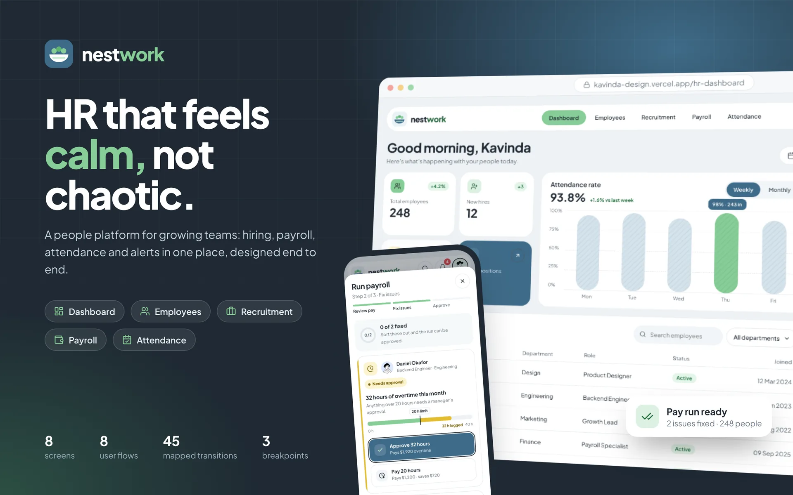
01 · Overview
The challenge
HR at a 50 to 300-person company is usually one or two people juggling spreadsheets, inboxes, chat and a payroll portal. Mistakes aren’t dramatic, they’re small and late: a missing bank account found after the run, or leave approved in a thread nobody else saw.
The outcome
One product with five focused spaces and a shared top bar. Every task starts, gets checked and finishes in the same place, and issues are fixed inline with the rule in view instead of being found after the fact.
02 · The problem
Mapping a month of HR work showed the same pattern everywhere: the data exists, but it lives in six places, so every task starts with a hunt and ends with a hope.
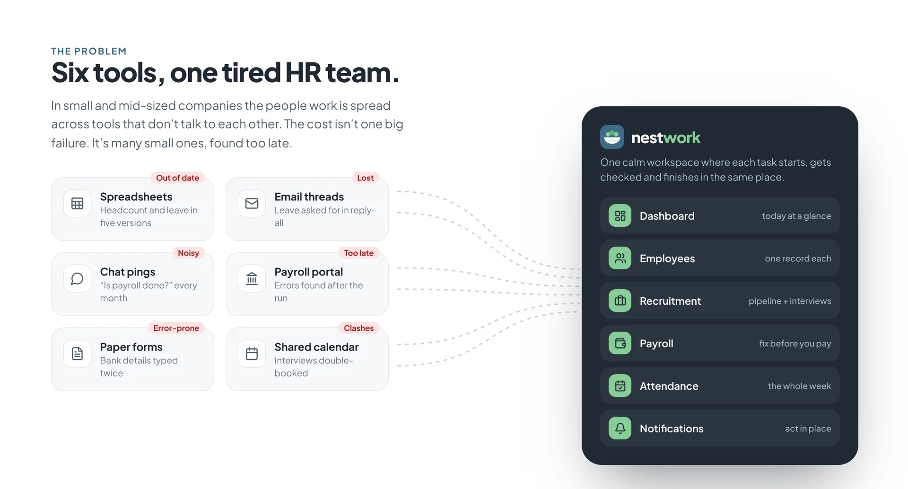
Payroll problems such as missing bank details or overtime over the limit surface after the run, when they are slow and costly to fix.
Leave and overtime approvals happen in chat and email, with no record and no clear owner.
Who’s in, who’s off and what needs a decision takes several tools to answer.
03 · Research
With no client to interview, I grounded the work in desk research and a structured review of how existing HR tools handle the same jobs, then wrote proto-personas to keep decisions honest.
Methods
HR Manager · 248-person company · proto-persona
Runs HR alone with one part-time assistant. Spends the last week of every month checking payroll by hand.
Goals
Frustrations
Needs
Engineering lead · manager of 9 · proto-persona
Approves overtime and leave for his team between meetings, usually on his phone.
Goals
Frustrations
Needs
How might we
How might we help a one-person HR team find and fix problems while there’s still time, without adding another tool to check?
04 · Journey
Of every HR task I mapped, the monthly pay run had the sharpest emotional dip: the moment issues are discovered and need someone else to act.
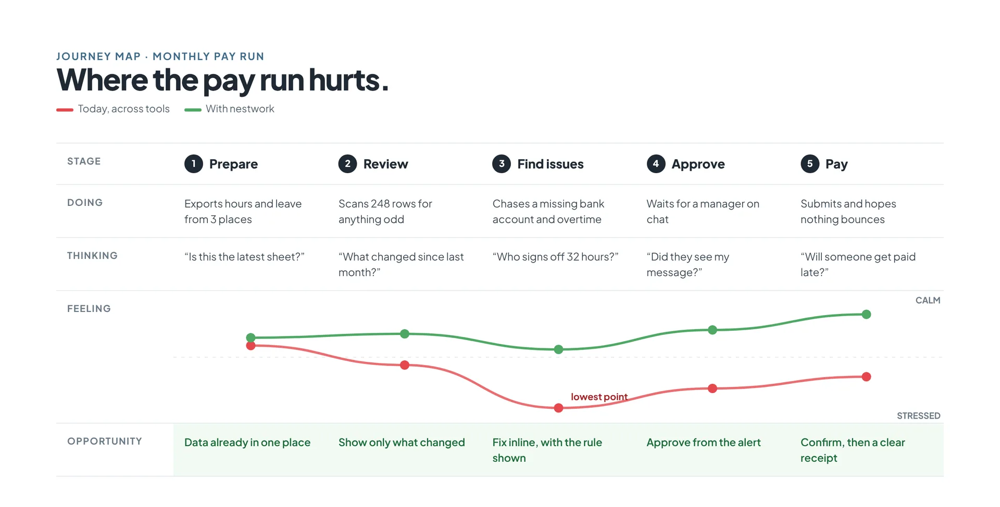
Key insights
05 · Principles
Every issue carries its own fix inline: a bank field, an approve button, a reschedule. No dead-end warnings.
Neutral surfaces, one accent, and colour saved for status. When something is red, it matters.
A person is the same record in Employees, Payroll, Attendance and Recruitment, so data is entered once.
Moves, rejections and removals come with undo, and risky steps ask for a clear confirmation.
06 · Architecture
I removed the side rail and moved navigation into a single top bar, which freed width for data. Search, notifications and the account menu live on every page.
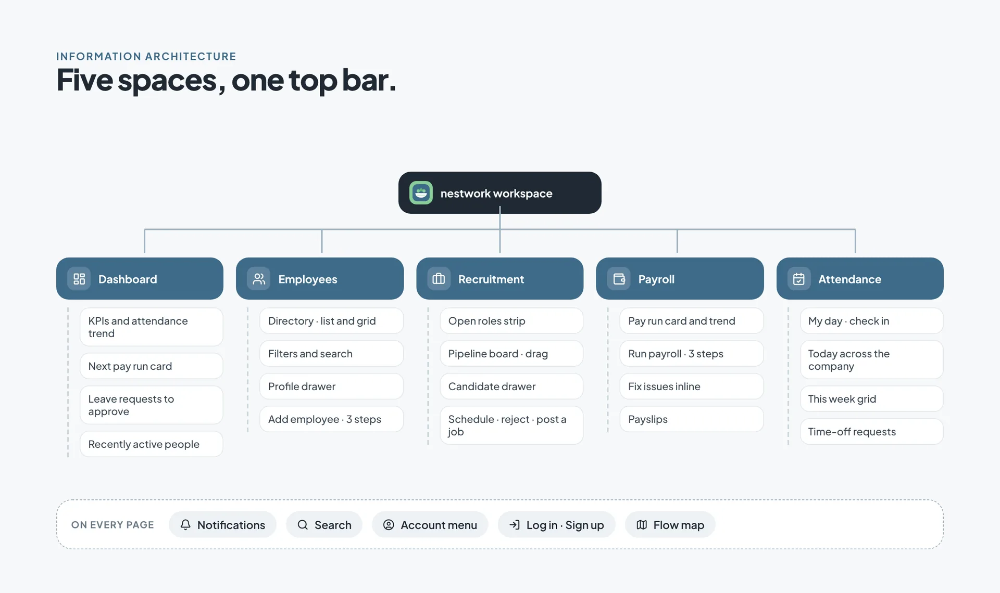
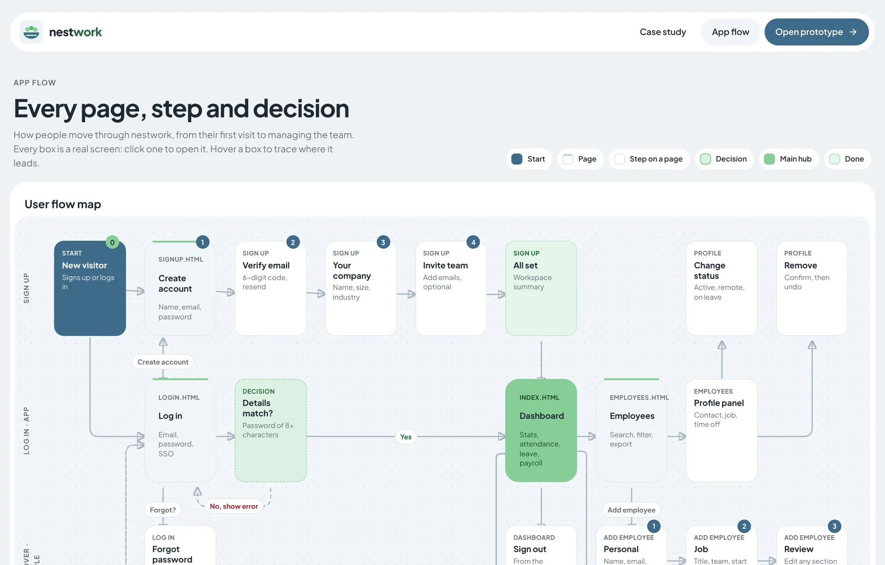
Core flow · run payroll
07 · User flow
I mapped each task as a flow before designing a screen, including the decisions and the ways back. Pick an area to follow its path; every step opens the matching page in the live prototype.
AlsoForgot password → enter work email → link sent → back to log in
AlsoOpen a profile → change status or remove, with undo
AlsoPost a job → role, details, review
AlsoIssues found → fix them in place before approving
AlsoOr open the screen (candidate, payroll run…) · Settings: categories, email, push
Step Decision End of the flow
08 · Design system
Green and slate came from the brand: green for progress and success, slate for structure and primary actions. Status always pairs an icon and a label with its colour, so it never relies on colour alone.
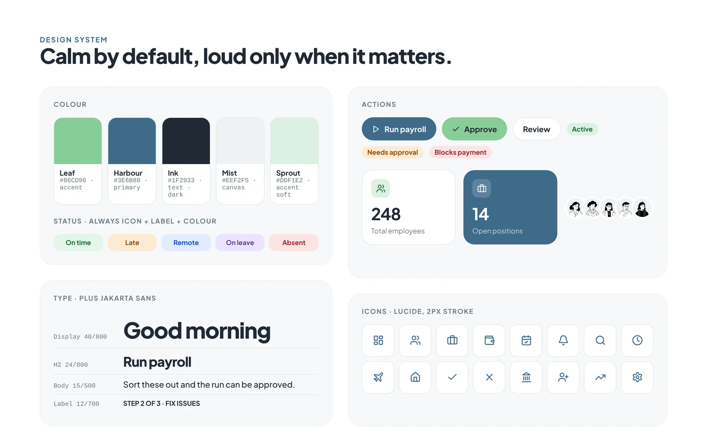
--accent#86CD96--primary#3E6B88--ink#1F2933--canvas#EEF2F5--accent-soft#DDF1E2Components
09 · Key screens
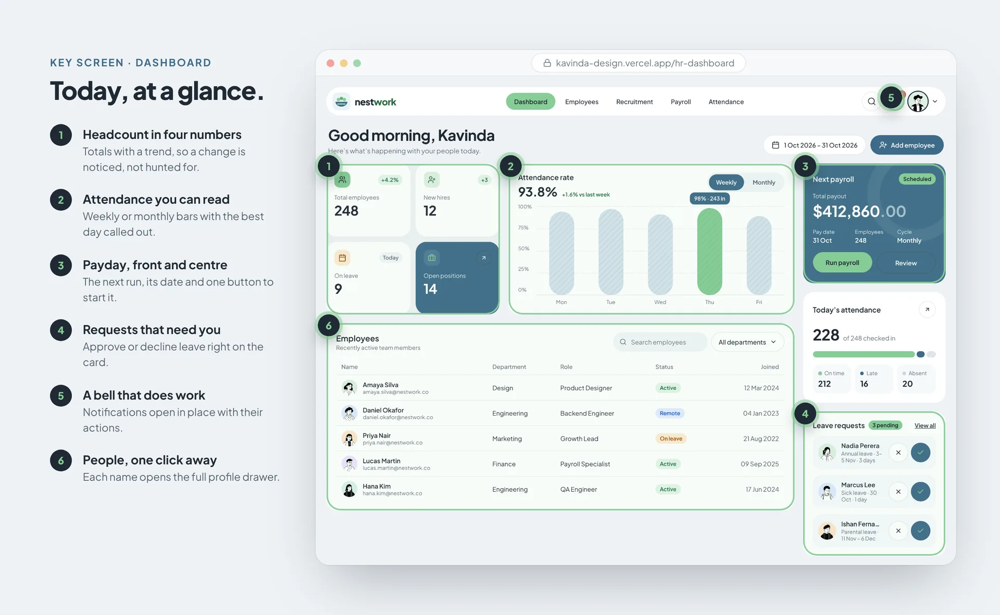
Dashboard
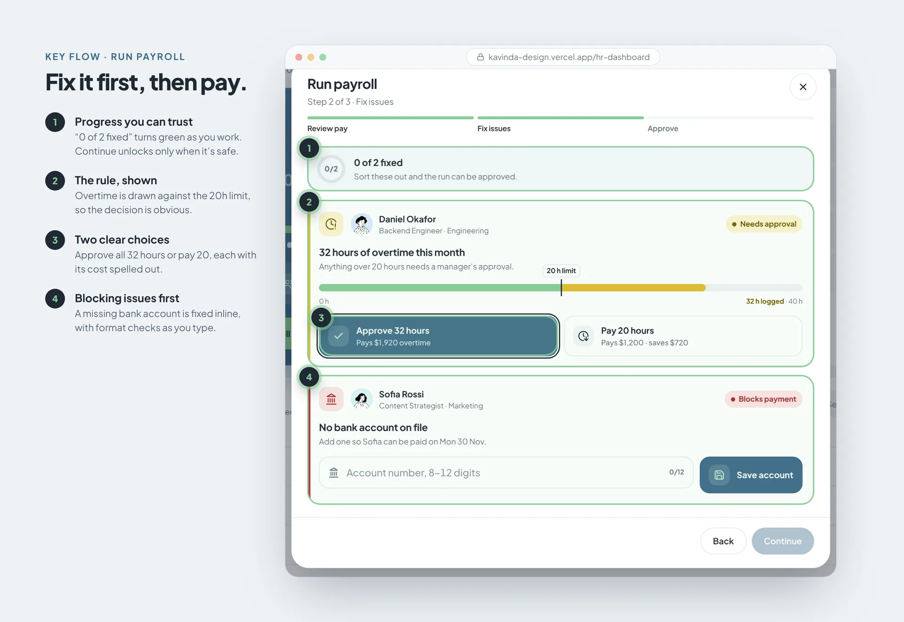
Run payroll · fix issues
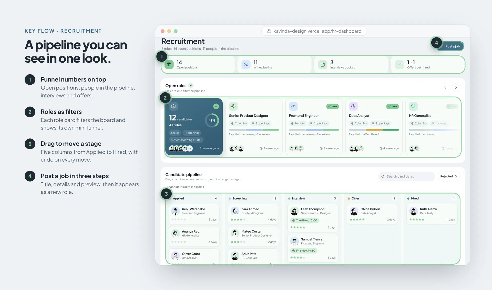
Recruitment
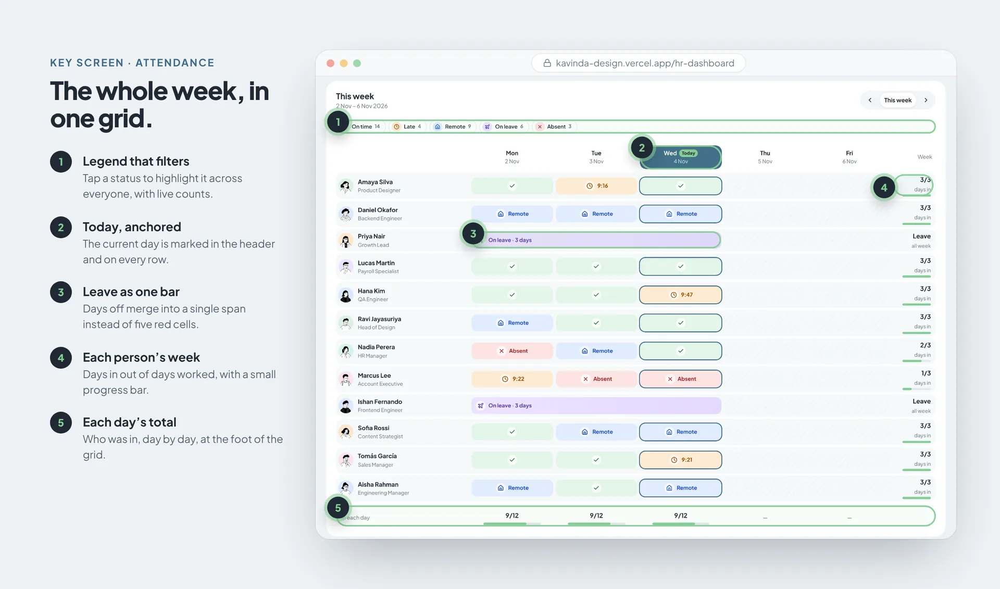
Attendance · this week
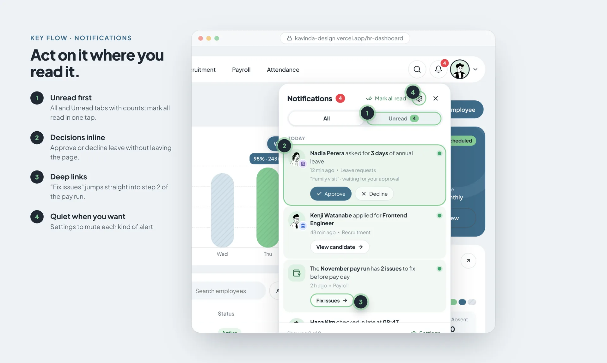
Notifications
10 · Details
11 · Responsive
Mobile is where managers approve things, so it got the same care as desktop: drawers become bottom sheets, tables become cards or scroll with a sticky name column, and primary actions sit within thumb reach.
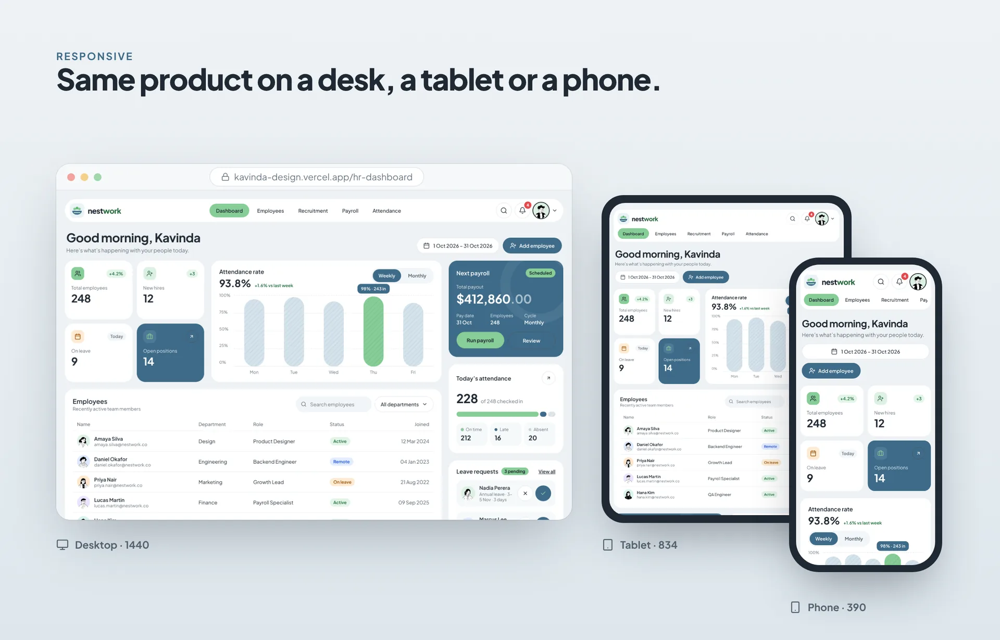
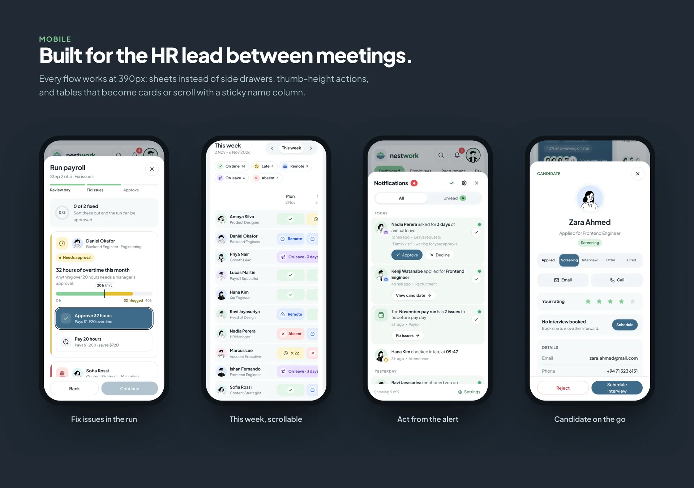
12 · Outcome
From sign-up to a finished pay run, every flow is clickable in the live prototype.
A flow map documents every page, step and decision for handoff.
Tokens, components and Lucide icons used across every page.
Desktop, tablet and phone, tested down to 360px wide.
Reflection
The biggest shift came from treating every warning as a task with its own fix. Once errors became things you could resolve on the spot, the whole product got calmer.
UI screens
The final interface, screen by screen. Switch between web and mobile, then drag, swipe or use the arrows.
Try it
Every screen in this case study is a working page. Open the dashboard and click through it.
Let's work together
I'm open to full-time roles and freelance projects. Drop me a line and I'll get back to you soon.